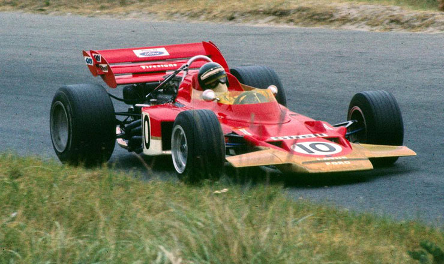
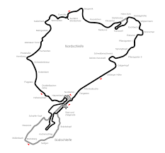

1970

Il ventesimo campionato mondiale di Formula 1, compiuto al Circuito di Nürburgring in Germania, fu stato vinto da Karl Jochen Rindt.
|  |
Il campionato mondiale di Formula 1 1970 organizzato dalla FIA è stato, nella storia della categoria, il 21° ad assegnare il Campionato Pil
-oti e il 13° ad assegnare il Campionato Costruttori. |
Scuderie più importanti che hanno partecipato:
- Mercedes Benz
- Maserati
- Ferrari
- Alfa Romeo
- Lotus
- Cooper
- BRM
- Mclaren
HOME
Tutti i diritti sono riservati
Sito realizzato da Boniotti Elisa, Lucchini Davide, Tassone Thomas